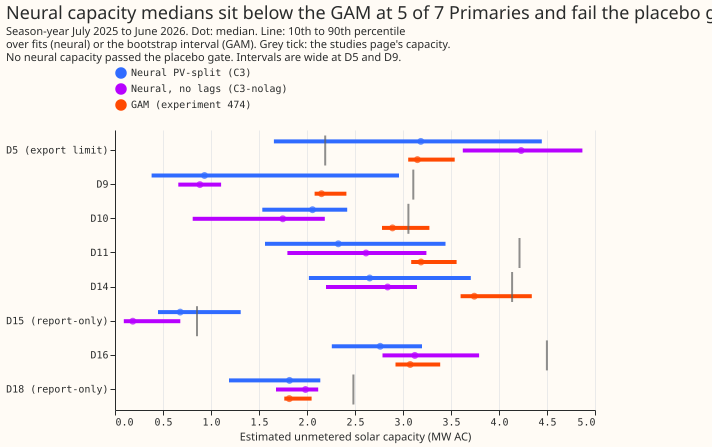
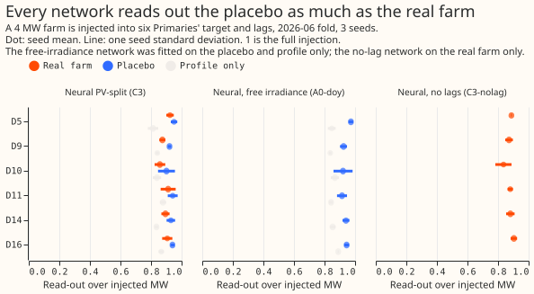
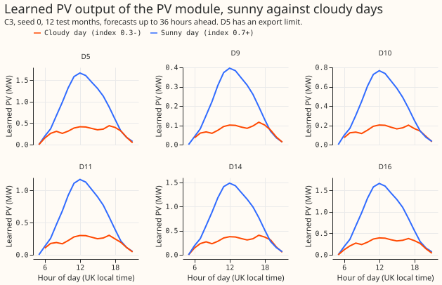

Does the explicit PV module inside the net demand neural network recover a plausible, placebo- gated capacity per Primary, and what does the explicit split improve or worsen the forecast on sunny half-hours?
Take-home: the capacities that the PV module learns are unvalidated, and the explicit split changes the forecast by less than the noise. In a known-answer test, the PV module read a placebo as strongly as a real solar farm, so its capacity cannot yet be trusted as a measurement of unmetered solar capacity. The explicit split moves the forecast by less than the seed-to-seed noise.
Experiment 416 fitted a neural network that forecasts net demand (demand minus solar output) at each Primary substation. The network has a PV module (a learned solar capacity per Primary times a physics curve of irradiance and temperature) beside a demand module that gets no direct irradiance. This experiment asks whether the learned capacity is a measurement. The test adds a known solar farm's output to six Primaries' data and checks whether the capacity rises by the injected megawatts. A Primary passes the gate only if the real farm is read out above a placebo (the same farm's monthly daylight profile with its day-to-day sky shuffled within the month) by more than 2 seed standard deviations.
| Name | PV module | Irradiance input | Power lags | Day-of-year inputs |
|---|---|---|---|---|
C3 (PV-split) |
yes | only through the PV module | yes | yes |
A0-doy (free irradiance) |
no | free input | yes | yes |
A0-noirr-doy |
no | none | yes | yes |
H1 |
yes | free input and PV module | yes | yes |
C3-nolag |
yes | only through the PV module | no | yes |
C3p-weak |
yes (weak log prior on capacity) | only through the PV module | yes | yes |
Power lags are the network's inputs of the Primary's own earlier power readings. The read-out is the megawatts obtained by regressing the change in a network's median forecast (against the same network with no injection) on the ensemble's unit shape of irradiance; a read-out of 1 is the full injection. The capacity increment is the change in the learned capacity parameter of the PV module. "Signed-MW six" means the six Primaries whose telemetry carries the sign of power flow (D5, D9, D10, D11, D14, and D16); D15 and D18 are report-only. Sunny middays are half-hours from 10:00 to 15:00 with a CAMS clear-sky index of at least 0.7. CRPS is the continuous ranked probability score, in points of effective capacity.
The placebo gate failed at all six signed-MW Primaries. The PV-split network read the 4 MW real
farm out at 0.86 to 0.92 and the placebo at 0.90 to 0.95. The A0-doy network, which has no PV
module, read the placebo out at 0.91 to 0.97. The read-out therefore measures the profile that a
network learns from the hour and the day of year, not the sky.
The forecast difference matches experiment 416. On sunny middays C3 minus A0-doy is +0.223
CRPS points (interval -0.137 to +0.556), against a minimum detectable effect of 0.365. The 0.02 loss
limit of the decision rule cannot be tested at an overall minimum detectable effect of 0.105. The
overall point estimate is +0.023 CRPS points (interval -0.031 to +0.070), and q99 pinball loss at
days 1 to 10 is -0.021, about 7% lower.
Adoption therefore rests on the explanation clause. That clause needs capacities that pass the gate.
The capacities do not pass, so the PV module is not recommended for production on this evidence.
Figures



Results
- Arms. Stored from experiment 416, not refitted:
A0-doy(free irradiance, no PV module),A0-noirr-doy,C3(PV-split),H1(explicit term plus free irradiance),C3p-weak(weak log prior). New:C3-nolag(C3with the power lags held constant), fitted on the 5 fold months of experiment 449, 3 seeds. Base recipe: experiment 397's plain loop with day-of-year inputs and no pretraining. Physics as experiment 405 (ensemble-mean and spread of shortwave, tilt 35, DC to AC 1.15, 0.4% per kelvin). Monthly refits. - Rows. One shared set of half-hours with the stack, BG2, the manual heuristic, and climatology
(row set
fold_a_daily_gap_v1); signed-MW six; D15 and D18 report-only and excluded from the six; D5 (export limit) and D12 (reverse flow, no PV module) marked. Flagged exact-zero half-hours dropped; D15 and D18 cut before 2025-03-01. Neural arms raw (no 1.15 widening); references as stored. - Gate limit. The limit per Primary was written before any
C3placebo score: D5 0.973, D9 0.924, D10 0.921, D11 0.914, D14 0.941, D16 0.944. - Gate result. The first clause passes everywhere because the limit is so high. The second clause (real farm above the placebo by 2 seed standard deviations) fails at all six Primaries. Real minus placebo in read-out is -0.027 to -0.046.
- Capacity increment. The learned capacity rises by 0.17 to 0.45 of the injected 4 MW (0.03 to 0.46 across all real-farm injections). Real minus placebo in capacity increment is +0.06 to +0.15, which lies inside 2 standard deviations at 5 of the 6 Primaries (D14 is the exception).
- Lags. The real-farm capacity increment (in fractions of the injected 4 MW, in the order D5,
D9,
D10, D11, D14, D16) is 0.24, 0.41, 0.43, 0.25, 0.25, 0.17 for
C3-nolagand 0.30, 0.40, 0.43, 0.17, 0.17, 0.17 forC3. It is higher without lags at D9, D10, D11, and D14 on point estimates, all inside seed noise, and the read-out is lower at all six (0.836 to 0.904 against 0.858 to 0.924). Removing the lags worsened CRPS by 0.249 points at days 1 to 10 (interval +0.113 to +0.422) and by 0.139 on sunny middays (interval +0.006 to +0.210). - Capacity. Neural medians (season-year 2025) against the GAM: D5 3.19 against 3.15 MW, D9 0.93 against 2.15, D10 2.06 against 2.89, D11 2.33 against 3.19, D14 2.65 against 3.74, D16 2.76 against 3.08, D18 1.82 against 1.82. D15 has no GAM estimate. See the experiment 474 page.
Pros and cons of explicit PV for net demand
12 months, signed-MW six, CRPS in points of effective capacity (absolute scores), days 1 to 10 unless stated. Bonferroni count: 6 tests (3 contrasts, 2 metrics), level 99.17%.
| Slice | A0-doy |
A0-noirr-doy |
C3 |
H1 |
Stack | BG2 | Manual heuristic | Climatology |
|---|---|---|---|---|---|---|---|---|
| Overall | 2.961 | 3.002 | 2.985 | 2.961 | 2.949 | 3.016 | 3.606 | 3.832 |
| Sunny middays | 4.263 | 4.366 | 4.486 | 4.490 | 4.888 | 4.497 | 5.600 | 5.693 |
| All daylight | 3.730 | 3.833 | 3.783 | 3.745 | 3.861 | 3.893 | 4.550 | 4.674 |
| Cloudy daylight | 4.705 | 4.916 | 4.668 | 4.569 | 4.194 | 4.863 | 5.617 | 5.769 |
| 12 to 36 hours | 2.652 | 2.719 | 2.687 | 2.659 | 2.416 | 2.594 | 3.603 | 3.852 |
| Cold winter nights | 4.688 | 4.616 | 4.633 | 4.715 | 4.183 | 4.553 | 6.283 | 6.573 |
- Where explicit PV helps. The PV module narrows the upper tail: q99 pinball loss on sunny
middays is 0.310 for
C3against 0.314 forA0-doyand 0.320 forA0-noirr-doy, and over days 1 to 10 it is 0.285 against 0.306 and 0.309; q99 coverage is 0.966 against 0.960. The PV-split network scores better thanA0-noirr-doyon cloudy daylight (-0.248, interval -0.479 to -0.029). The PV module gives a PV profile that can be plotted by sky condition (third figure). - Where explicit PV worsens the forecast. On sunny middays
C3is +0.223 CRPS points worse thanA0-doy(not significant). The capacity is not identified (gate). The module needs a capacity table per Primary (refreshed at each monthly refit) and a physics chain on ensemble irradiance and temperature at forecast time. Removing the lags, one way to force the PV module to carry the sky, worsens the forecast. - Minimum detectable effect. Sunny middays 0.365 (12 months), 0.275 (5 fold months);
overall 0.105 and 0.126. None of the
C3contrasts againstA0-doyorA0-noirr-doyexceeds its minimum detectable effect; theC3-nolagminusC3overall contrast (+0.249 against 0.114) does. - Fold months (5 months, 3 seeds for
C3-nolag).C3minusA0-doysunny middays +0.193 (-0.295 to +0.645); overall -0.019.C3-nolagminusC3overall +0.249. - Tails and avoidable-curtailment cost. On the 12 months q99 coverage on sunny middays is 0.996
(
C3), and cold winter nights q99 pinball loss is 0.96 forC3against 1.09 forA0-doy(stack 0.83). Christmas week (report-only, 20,736 rows): CRPS 4.32C3, 4.50A0-doy, 3.71 BG2. Avoidable-curtailment cost, energy-proxy, sum over the six Primaries and the scored months, GBP million at limit fractions 0.9, 0.75, 0.5:C39.55, 28.23, 80.81;A0-doy9.49, 28.61, 82.06; stack 4.24, 16.62, 59.80; manual heuristic 10.41, 37.43, 104.84. D14 and D16 dominate the totals.
Predictions
- (1)
C3recovers 0.4 to 0.9 of the injected megawatts at 4 of 6 Primaries: fails; the capacity increment reaches 0.4 at 2 of 6 (D9 and D10). - (2) The placebo stays under the limit and the real farm beats it by 2 seed standard deviations at 4 of 6: the first half holds at 6 of 6 (the limit is high); the second half holds at 0 of 6 on the read-out and 1 of 6 on the capacity increment (D14).
- (3)
C3-nolagrecovers more thanC3at 4 of 6: holds on point estimates (capacity increment), not beyond seed noise. - (4) Sunny-midday
C3minusA0-doyrepeats experiment 416: holds (+0.223, interval -0.137 to +0.556). - Departure from rule 1. Rule 1 defines recovery on the capacity increment, and the gate limit
is defined on the read-out. The gate was applied to the read-out, which applies to
A0-doytoo. On the capacity increment the gate fails at 5 of 6 Primaries.
Checks
- Reviews. A fresh Sonnet agent reviewed the injection and fit code before the first fit and found no bugs; three small fixes were applied (saved lead and validation flag, an assertion on the six lag columns, the read-out restricted to the signed six). Reviews of the results and of this page are recorded in the pull request.
- Not computed. Median minus mean forecast per site and the mean-forecast error beside each quantile-score contrast were not computed; this experiment re-scores stored forecasts.
- Caveats. The read-out uses rows inside the fold's own training window (in sample), so it
measures attribution, not skill. Injected megawatts are in units of the farm's 99th-percentile
output. NGED's event labels are incomplete: rows with no labelled event may still hold unlabelled
events. The equivalent capacity is a least-squares read-out on the ensemble unit shape. The
C3-nolagfits used 3 seeds; the stored arms use 5.
What to try next
- Inject the anomaly only. An injection whose daylight profile is removed (experiment 409's anomaly variant) at 4 MW or more tests the sky read-out without the profile that any network absorbs.
- Use the GAM capacity as the PV module's capacity (pinned, as
C1of experiment 405) and judge the neural module on the forecast only.
Plan (written before any fit)
What is asked
The question is whether the PV module of the net demand neural network reads the sky well enough to give a capacity per Primary worth plotting, and whether the explicit split helps or hurts the net demand forecast. This experiment reuses the four stored score arms of experiment 416 and fits only the new work.
Review of the plan against the latest evidence
- Reused, not refitted:
A0-doy(A-free),A0-noirr-doy(No-irr),C3(PV-split),C3p-weak(weak prior), andH1(explicit term plus free irradiance), from experiment 416'swork/seed_preds/, 12 months, 5 seeds, with the*.capacity.jsonfiles. - Base recipe: experiment 397's plain loop (
e00397_prep,e00405_{prep,models,pv,fit},e00409_*,e00416_*), day-of-year inputs, no pretraining. Experiment 425's arm A (pretrained) is a reference row only. - Physics as in experiment 405: irradiance is the ensemble mean and spread of shortwave in
training and forecasting alike; CAMS defines the sunny flag at scoring only. Tilt 35 degrees, DC
to
AC ratio 1.15, 0.4% per kelvin. The brief's 1.25 ratio and its 1.1 and 1.5 sensitivity are
dropped, because they break the reuse of every stored
C3fit. - Scope: the six signed-MW Primaries (D5, D9, D10, D11, D14, D16), with D15 and D18 report-only. D5 (export limit), D12 (reverse flow, no PV module), D15 and D18 are marked in every table. The MVA-only Primaries are covered by experiment 474's GAM-side table.
- Standing rules followed: cleaned data, the D15 and D18 cut at 2025-03-01, monthly refits, saved networks, the tails, the seven-step process, draft pull request.
New work (about 50 fits, one GPU process under 8 GB, one feeder core)
- Placebo and injection (runs first, gates the capacity plots). On the 2026-06 fold, 3 seeds,
inject a metered solar farm's output (Solar A and Solar C of the six; named only by letter) into
all six signed-MW Primaries, with the lags injected as in experiment 405. Conditions: control
(no injection); held farm at 2 MW and 4 MW for both farms; placebo (the farm's monthly daylight
profile plus its day-to-day anomaly shuffled within the calendar month, 4 MW); profile only (the
farm's monthly daylight profile, 4 MW).
C3takes all of them (7 conditions, 21 fits).A0-doytakes control, placebo, and profile only (9 fits) to calibrate the gate. - One new arm:
C3-nolag.C3with the three power-lag values and their missing flags held constant in training and at inference. It is fitted on the five fold months of experiment 449 (3 seeds, 15 fits) and on control and the 4 MW held farm in the 2026-06 fold (6 fits). - Re-scoring on CPU: the stored arms plus
C3-nolagon the 12 months and on the five fold months of experiment 449, from stored forecasts. - Plots: capacity per Primary with the prior and the 10th to 90th percentile over seeds, beside experiment 474's GAM estimates; implied PV on a sunny and a cloudy day; PV share of net demand by hour; recovery against injected MW.
Pre-registered rules
- Recovery is the seed-mean learned capacity increment (injected minus control, last
season-year cell) divided by the injected MW, per Primary. The least-squares read-out of
experiment 409 (
dC_LS) is reported beside it. - The gate limit is the equivalent capacity that
A0-doyshows on the profile-only injection: the least-squares regression of the change in its median forecast between control and the injection on the ensemble unit shape, over daylight rows of the 2026-06 test month, divided by the injected MW. The limit is the larger of the profile-only equivalent and the placebo equivalent, seed-averaged, per Primary. The number is committed to this page, in a separate commit, before any PV-split placebo score is read. - The gate passes at a Primary when
C3's placebo recovery is at most that Primary's limit plus 0.20, and the held-farm recovery exceeds the placebo recovery by more than 2 seed standard deviations. A failed gate marks the Primary's capacity "unvalidated" in the plots. Scores are reported regardless. - Score contrasts (12 months and the five fold months, signed-MW six, CRPS days 1 to 10 and
sunny middays):
C3minusA0-doy,C3minusA0-noirr-doy,C3-nolagminusC3(fold months only). Month-block bootstrap at 95% with 20,000 resamples, Bonferroni across the 3, one equal-row intersection (row setfold_a_daily_gap_v1), minimum detectable effect first. Sunny middays are CAMS clear-sky index at least 0.7, 10:00 to 15:00. - Other scores: q01, q05, q95, and q99 coverage and pinball loss; the 12 to 36 hour band;
cold winter nights; Christmas week (report-only); the 1.15 widening; avoidable-curtailment cost
at f = 0.9, 0.75, and 0.5 for the signed-MW six (
metrics.avoidable_curtailment_cost); absolute scores beside every contrast. - Expected result: close to experiment 416, which is not new evidence by itself. The 0.02 loss limit is untestable at the sunny-midday minimum detectable effect of 0.28 to 0.37 (overall 0.057).
Gate limit (written after the A0-doy fits and before any C3 placebo score was read)
The limit is non-binding: A0-doy recovers 0.91 to 0.97 of the injected megawatts from the
placebo, and 0.84 to 0.89 from the profile alone. The free-irradiance network absorbs the farm's
monthly daylight profile through its hour and day-of-year inputs, and the profile is most of the
injected signal. Limits per Primary (placebo recovery, the larger of the two): D5 0.973, D9 0.924,
D10 0.921, D11 0.914, D14 0.941, D16 0.944. Rule 3 stands as written, so the first clause (C3
placebo recovery at most the limit plus 0.20) can only fail above about 1.1, and the discriminating
clause is the second one: the held farm must exceed the placebo by more than 2 seed standard
deviations. The read-out uses rows inside the fold's own training window, so it measures how much of
the injection the fitted network attributes to the sky and the profile, not out-of-sample skill.
Production cost of the PV term
The PV term needs a capacity table per Primary, refreshed at each monthly refit, and a physics chain (irradiance and temperature from the ensemble to plane-of-array power) at forecast time. The write- up reports this beside the score.